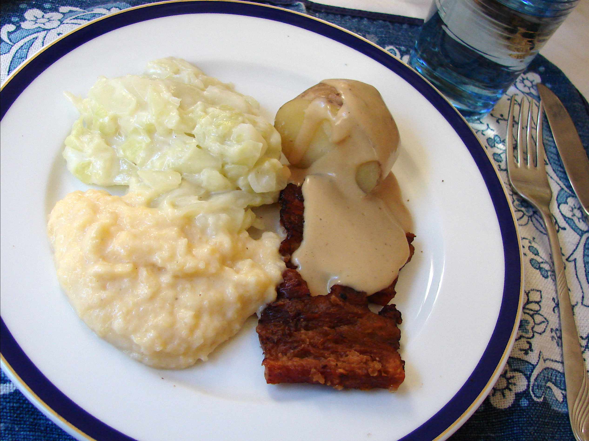

Flesk og duppe

Om retten
Flesk og duppe er en tradisjonell norsk rett som består av stekt sideflesk
servert med hvit saus og kokte poteter.
Den rike smaken av det sprøstekte flesket kombinert med den kremete sausen
gir en deilig kontrast og er en favoritt blant mange nordmenn.
Ingredienser
- Sideflesk
- Poteter
- Melk
- Smør
- Hvetemel
- Salt
- Pepper
Tilberedning
-
Start med å skjære sideflesket i tykke skiver. Du kan velge om du vil
bruke ferskt eller røkt flesk, avhengig av din preferanse. Skivene kan
være omtrent 1-2 centimeter tykke.
-
Stek flesket i en stekepanne på middels varme til det blir sprøtt og
gyldent. Du trenger ikke tilsette ekstra fett, da flesket vil slippe ut
sitt eget fett under stekingen. Pass på å snu skivene jevnlig for å
steke dem jevnt på begge sider. Når flesket er ferdigstekt, kan du legge
det på et kjøkkenpapir for å renne av seg overflødig fett.
-
Mens flesket steker, kan du begynne å koke potetene. Skrell dem og del
dem i passe store biter. Kok potetene i lettsaltet vann til de er møre.
Tiden det tar å koke potetene kan variere avhengig av størrelsen på
bitene.
-
Når flesket er ferdigstekt og potetene er kokt, kan du begynne å lage
sausen. Smelt en passende mengde smør i en kjele på middels varme.
Tilsett deretter hvetemel gradvis mens du rører kontinuerlig. Dette
danner en jevning som vil tykne sausen.
-
Gradvis tilsetter du melk i jevningen, mens du fortsetter å røre for å
unngå klumper. Fortsett å tilsette melk til sausen har en jevn og kremet
konsistens. Du kan justere mengden melk etter hvor tykk eller tynn du
ønsker sausen.
-
Tilsett salt og pepper etter smak i sausen, og eventuelle andre krydder
eller urter du ønsker å bruke for ekstra smak. Rør godt og smak til for
å justere krydderet.
-
Når sausen er klar, kan du servere flesket og potetene med sausen ved
siden av. Legg flesket og potetene på tallerkener og hell sausen over
eller server den ved siden av.
Tilbake til forsiden